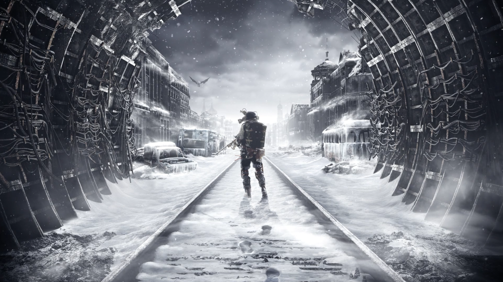
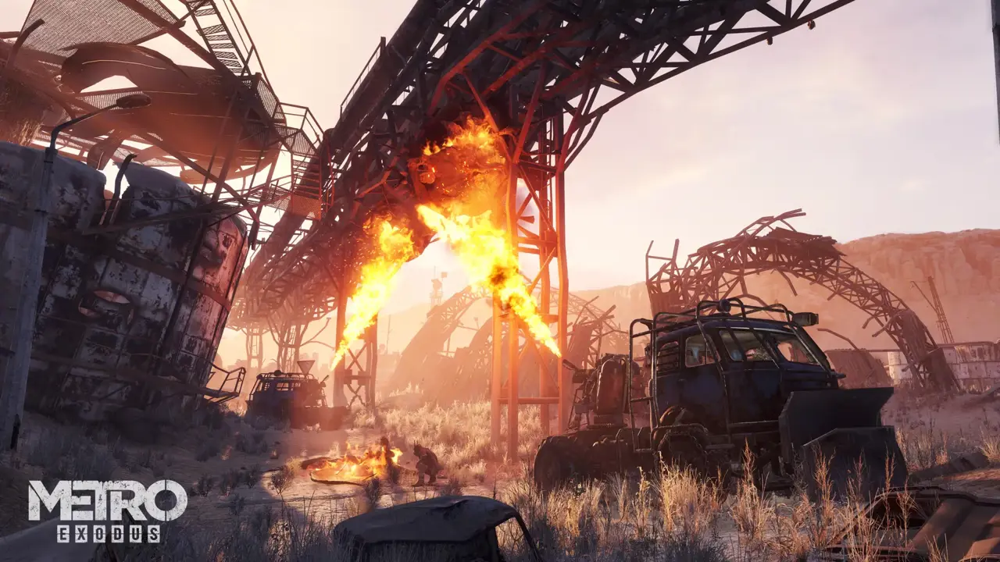
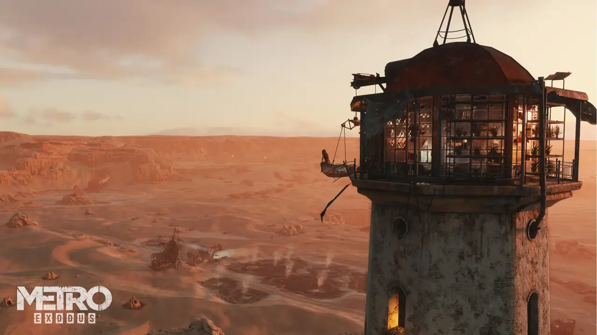
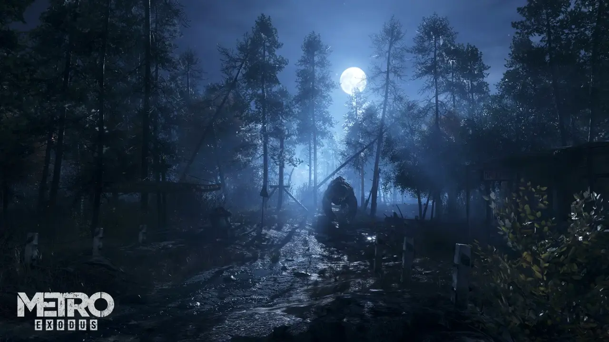
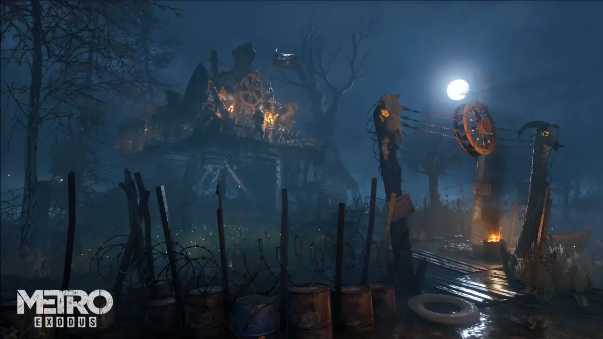
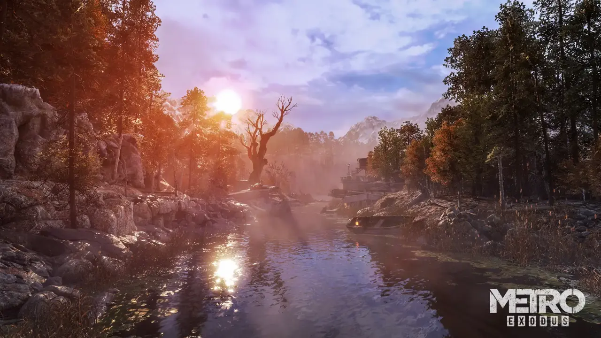
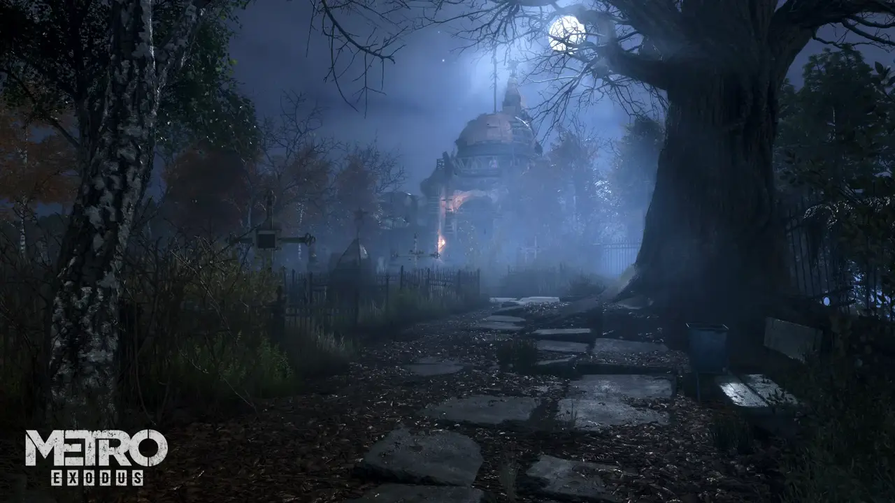

Metro Exodus — это эпический сюжетный шутер от первого лица от студии 4A Games, сочетающий в себе напряженные бои и скрытное прохождение с исследованием мира и элементами хоррора на выживание в одной из самых атмосферных игровых вселенных.
Постапокалиптическое общество Московского метрополитена состоит из множества независимых станций и могущественных фракций. После кровопролитной гражданской войны между фашистами из «Рейха» и коммунистами из «Красной линии» доминирующей силой стала «Ганза». Она сохраняет относительно мирный курс, поощряя торговлю и гражданские свободы, и выступает естественным союзником элитного «Ордена спарты», который по-прежнему стремится поддерживать мир в метро...
На Пустошах возникло немало замкнутых общин, но едва ли найдется более странная, чем группа фанатиков, обосновавшихся у берегов Волги. Считая, что любые технологии — это безумие человечества и лишь отказ от них дарует спасение, эти люди под бдительным оком своего зловещего, но по-своему харизматичного лидера Силантия начали поклоняться великому и могучему зверю, таящемуся в глубинах вод…
Когда не остается надежды на возвращение к нормальной жизни, неудивительно, что по всей пустоши возникают бандитские шайки. Свирепые и беспощадные банды, обосновавшиеся на берегах Волги, похоже, заключили между собой перемирие и теперь сосредоточились на том, чтобы терроризировать местных жителей и отбирать у них всё, что представляет хоть какую-то ценность.
Огнепоклонники это господствующий класс в неофеодальном обществе пустыни; они держатся с подобающей самоуверенностью и ни во что не ставят человеческую сущность своих противников. Своим названием они обязаны культу «Священного пламени», созданному их предводителем Бароном для того, чтобы держать порабощенное население в повиновении.
«Дети леса» это, по сути, группа детей, которые оказались отрезаны от мира в скаутском лагере с началом войны и так и не успели по-настоящему повзрослеть. Под опекой своего наставника, которого они называют Учителем, они научились выживать в дикой природе и противостоять любым угрозам будь то капризы погоды, свирепые звери, набеги бандитов или незваные гости.
Вся поверхность Москвы окутана пеленой опасной радиации. Чтобы дышать в таких условиях, Артему и рейнджерам приходится постоянно носить противогазы, когда они находятся на поверхности. Орден «Спарта» полагал, что за пределами Москвы царят столь же непригодные для жизни условия, но теперь всё изменилось…
Эти гудящие синие сгустки электрической энергии одна из диковин постапокалиптического мира. Чрезвычайно опасные для всего, что оказывается в радиусе их действия, эти странно притягательные сферы могут появляться как днем, так и ночью, но обычно движутся по одному и тому же маршруту.
Пустыня суровая среда даже в лучшие времена. Невыносимая жара, необходимость постоянного обслуживания техники из-за вездесущего песка и — если уж совсем не повезет песчаные бури. Эти стены песка сводят видимость практически к нулю и могут стать смертельной угрозой, если вовремя не найти укрытие.
Оказаться отрезанным от цивилизации это серьезное испытание для ваших навыков выживания. Угрозу для жизни представляют не только дикие звери и природные опасности, но и нехватка ресурсов: здесь непросто найти боеприпасы и припасы.
Кадры экспедиции «Авроры» сквозь постапокалиптические просторы России. Нажмите на любое изображение для просмотра в слайдере.








